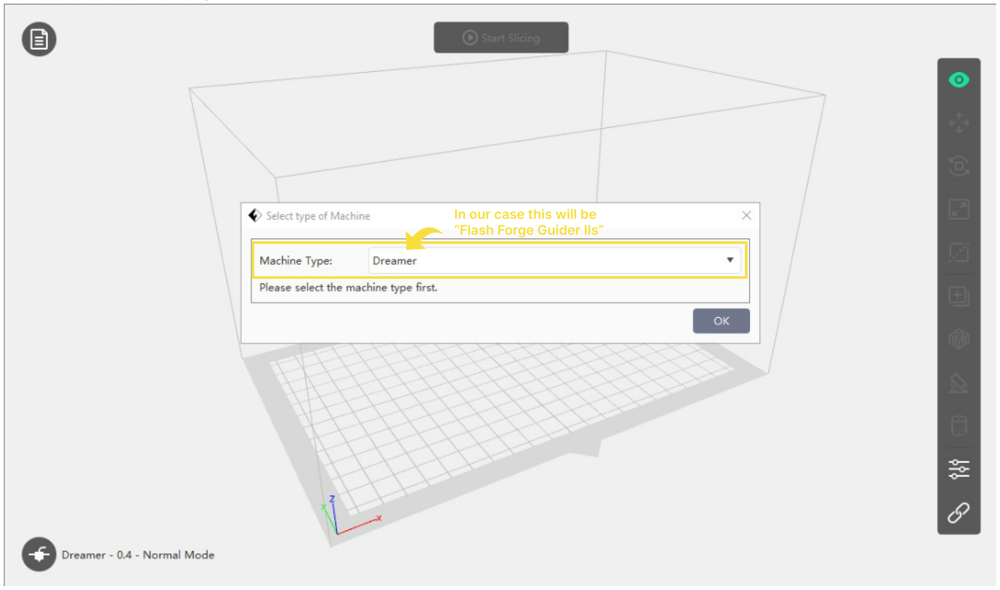
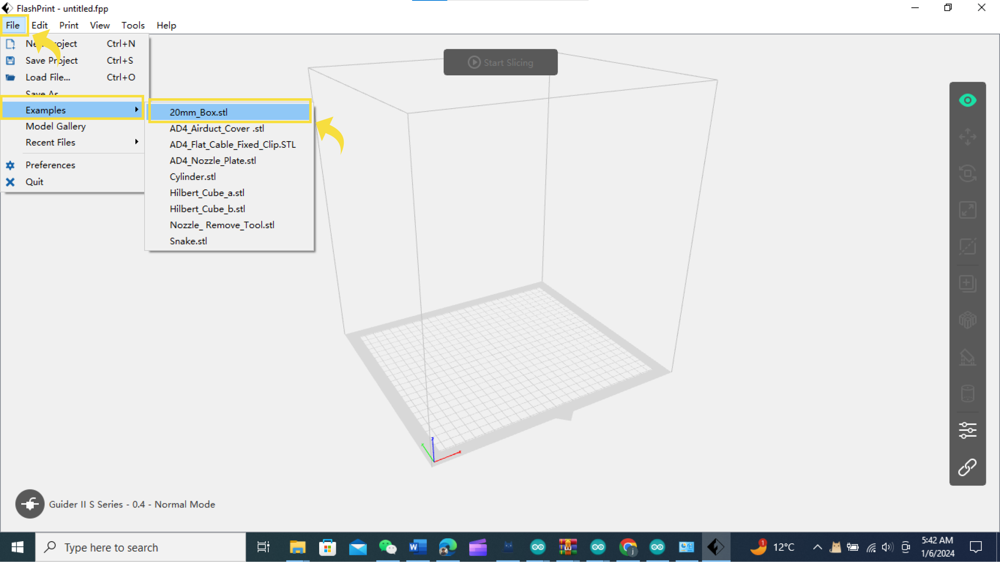
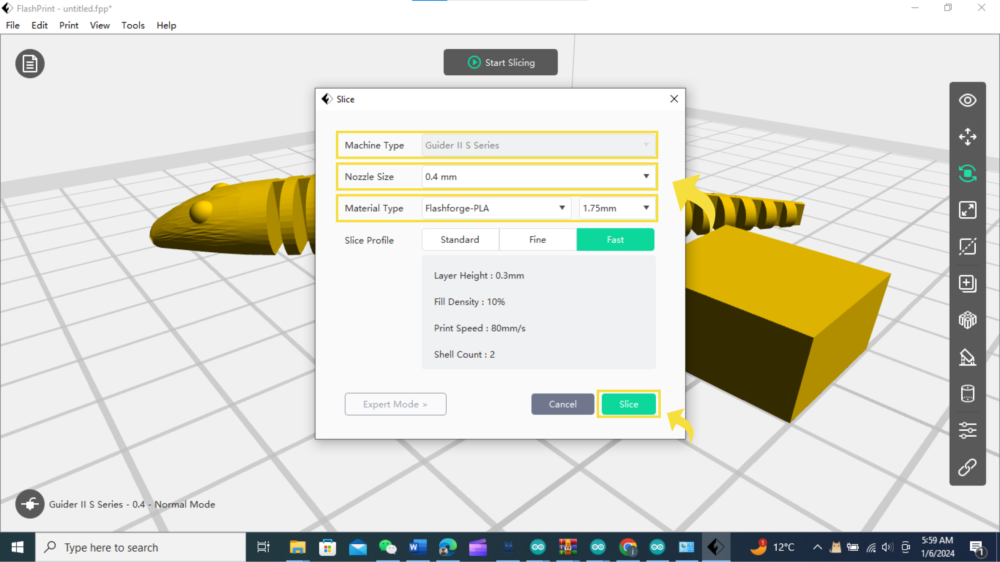
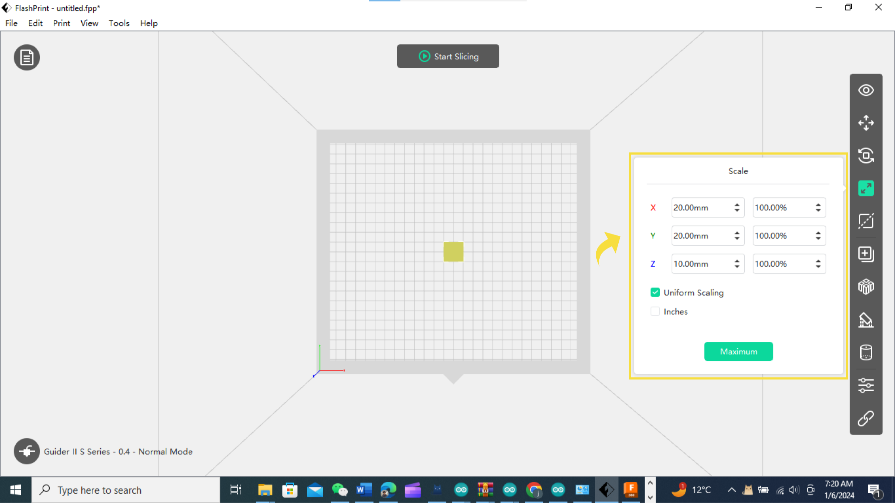

A slicer software is a type of program that takes a 3D model and
prepares it for printing on a 3D printer. It does this by slicing the
3D model into hundreds or thousands of thin layers, which the 3D
printer can then build up one by one to create the final object.
A slicer software also allows you to adjust various settings and
parameters that affect the quality, speed, and accuracy of the print,
such as layer height, infill density, support structure, and more.
FlashPrint
Ultimaker Cure
Some examples of slicer software are FlashPrint, UltiMaker Cura,
PrusaSlicer, and Simplify3D. Each slicer software has its own
features, advantages, and disadvantages, so you may want to try
different ones to find the best one for your 3D printer and your
project.
In our case we used Flashforge Printer for printing and FlashPrint was
our best choice to go ahead with. So our next explanations will be
according to latest FlashPrint 5 slicer software.
How to Install FlashPrint 5
You can download the latest FlashPrint software from
here .
When using FlashPrint 5 for the first time, simply select the
corresponding printer type to quickly access the software.

You can quickly find the sample models in STL format via [File] -
[Examples]; for example, a small cube is shown below.

If you want to quickly slice a model in STL format into a format
recognizable by the printer, first ensure the printer type at the
bottom left of the interface is correct (if incorrect, click
[Machine Type] at the bottom left to choose the right one), click
[Start Slicing] and then select the nozzle size and material type
for rapid slicing.

After finishing slicing, there are two ways to print the model.
1. Export the model to a USB flash drive and plug it into the
printer's USB port for direct printing.
2. Connect FlashPrint 5 to your printer and remotely send the model to
the printer for printing (please ensure your computer and printer are
connected to the same network).
Now let’s try to understand the basic tools of FlashPrint software
interface.
1
View: View the model from different angles.
2
Move: Click it to move the model along X,Y axis, Shift+ mouse click
it to move along Z axis.
3
Rotate: Rotate the model.
4
Scale: Scale the model size.

5
Cut: Cut the model from different directions.
6
Duplicate: Copy the selected model file.
7
Auto Layout All: Automatically place all models.
8
Supports: Enter the supporters editing mode.
9
Wiping Tower: Enter the wiping tower editing mode.
12
Select the machine type, nozzle size and printing mode.
Expert mode will give us more access over settings of our model. Some
of the specific features have briefly discussed here.
Shells are the outer vertical layers of a print that affect the
strength and appearance of the print. The more shells you have, the
thicker and stronger the walls of your print will be, but also the
longer it will take to print and the more material it will use. You
can adjust the number of shells in the Print window under the Expert
Mode tab. The default value is 2, but you can increase it if you need
more durability or decrease it if you want to save time and filament.
Infill is the internal structure of a print that also determines the
strength and weight of the print. It is usually a pattern of lines or
shapes that fill the empty space inside the model. The more infill you
have, the denser and stronger your print will be, but also the longer
it will take to print and the more material it will use. You can
adjust the infill percentage in the Print window under the Expert Mode
tab. The default value is 15%, but you can increase it if you need
more stability or decrease it if you want to save time and filament.
Support is the additional structure that is generated by the
slicer to help print parts that have overhangs or bridges, which
are parts that extend beyond the base of the model without proper
support. Without support, these parts may sag, droop, or fail to
print correctly. You can enable or disable support in the Print
window under the Expert Mode tab. The default option is Smart
Support, which automatically adds support where needed, but you
can also choose Everywhere to add support everywhere, or None to
print without support. You can also adjust the support density,
angle, and distance from the model.
Raft is the thin layer of material that is printed under the model to
help with adhesion and stability. It is especially useful for models
that have a small contact area with the build plate or that are prone
to warping. You can enable or disable raft in the Print window under
the Expert Mode tab. The default option is On, but you can turn it Off
if you don’t need it or if you want to save time and filament. You can
also adjust the raft margin, gap, and layer count12.
Here are some more references for you to follow.